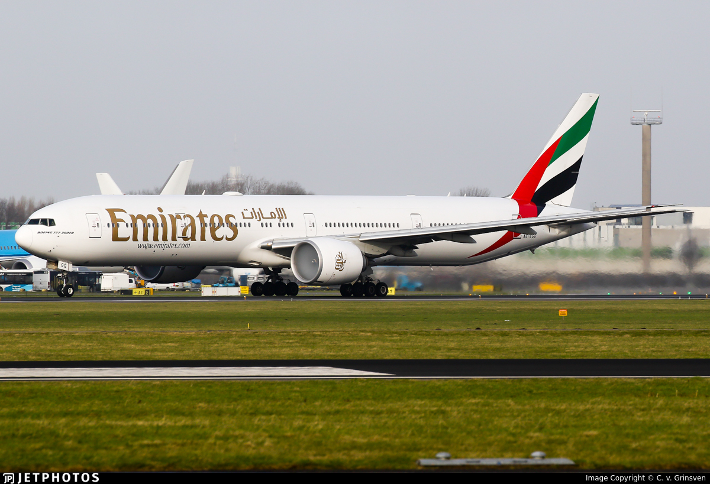
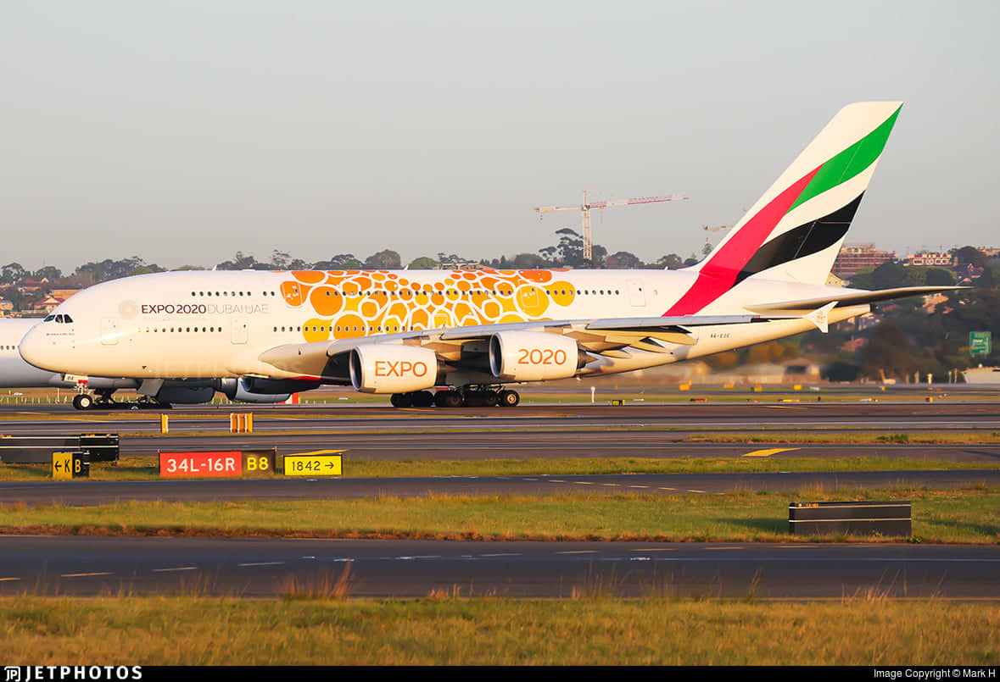
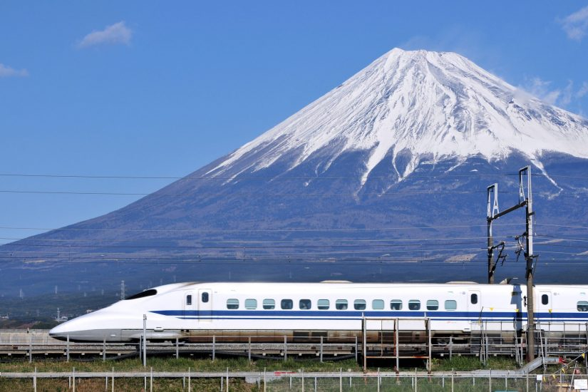
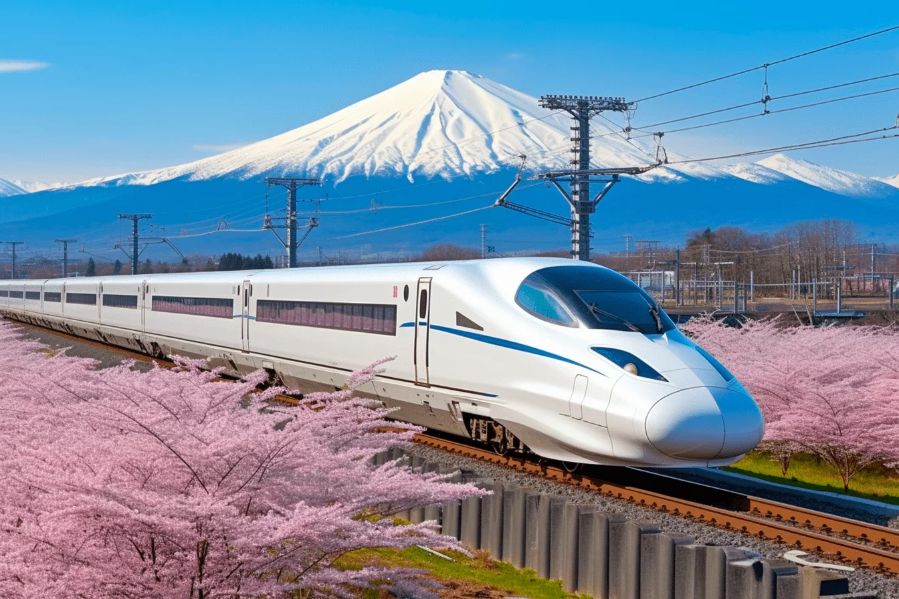

|  |  |
A repülő út hossza 3 óra átszállással összesen 18 óra volt.
Az Airbus A380 jelenleg a világ legnagyobb utasszállító repülőgépe
|  |  |
A Sinkanszen (’új fővonal’) egy nagysebességű vasúthálózat Japánban, amelyet a Japan Railways, az ország fő vasúttársasága üzemeltet.
A Tokió - Kiotó közti 540km-es távolságot 2 óra 10 perc alatt tettük meg egy N700A típusú vonattal.